The extrusion line scrap log workbook in my documents folder needs a scrap-rate column: scrap units over units produced, shown as a percent with one decimal. Then set a rule that shades any shift row red when that rate is above 4%. Look up the ISO 8601 week-date format on Wikipedia and write the ISO week for each shift date into the empty week column. Finally save a Python script next to the workbook that rebuilds the scrap-rate column from the raw CSV so I can rerun it monthly.
THINKINGLet me start by understanding the current state. I have a LibreOffice Calc file open with extrusion data. The task has multiple parts:
1. Add a scrap-rate column (scrap units / units produced) as percent with one decimal
2. Set conditional formatting to shade shift rows red when rate > 4%
3. Look up ISO 8601 week-date format on Wikipedia, write ISO week for each shift date into empty week column
4. Save a Python script next to the workbook that rebuilds the scrap-rate column from the raw CSV
First, I should look at the actual data. There's a raw CSV mentioned. Let me explore the file system first via terminal to understand the workbook and CSV location. Let me open a terminal.
Actually, let me take a screenshot first to confirm state, but I already see it. The columns are:
A: Date (showing ### - too narrow)
B: Shift (A/B/C)
C: Line
D: Units Produced
E: Scrap Units
F: ISO Week (empty)
Data rows 2-21 (20 rows).
Let me open a terminal to inspect files. I'll use the terminal app in the taskbar.
ACTIONI'll start by exploring the files involved. Let me open a terminal to inspect the workbook and the raw CSV.
EXECUTED (pyautogui in VM)pyautogui.press("return")
step 5 00:40:29
THINKINGThe Documents folder only has `.` and `..` - it appears empty (total 8, just the two directories). But the workbook extrusion_scrap_log.xlsx is open. Where is it? Maybe it's not in Documents. Let me search the whole home directory.
ACTIONThe Documents folder appears empty. Let me search the home directory for the workbook and any CSV.
THINKINGNo output shown - the find may still be running or returned nothing yet. Let me press Enter (it seems it already executed since prompt shows next). Actually the output hasn't appeared. Let me wait and screenshot.
EXECUTED (pyautogui in VM)pyautogui.press("return")
step 7 00:40:46
THINKINGFound it:
- `/home/user/documents/extrusion_scrap_log.xlsx` (note: lowercase "documents", not "Documents"! That's why `ls ~/Documents` was empty - different directory)
- `/home/user/documents/scrap_log_raw.csv`
So the actual documents folder is lowercase `~/documents`. Let me look at the CSV content.
ACTIONThe files are in lowercase `~/documents/`. Let me examine the raw CSV.
EXECUTED (pyautogui in VM)pyautogui.typewrite("cat ~/documents/scrap_log_raw.csv")
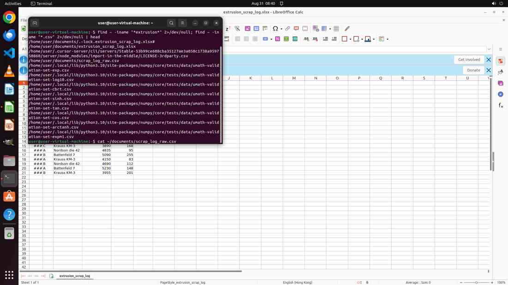
step 8 00:40:55
THINKINGThe command is typed but the terminal is small so output may be cut off at top. Let me maximize the terminal first, then run cat. Actually let me just run it and scroll. Better: pipe to a readable format. Let me maximize the terminal by clicking the maximize button, then re-run.
ACTIONLet me maximize the terminal for readability, then view the CSV.
EXECUTED (pyautogui in VM)pyautogui.click(776, 83)
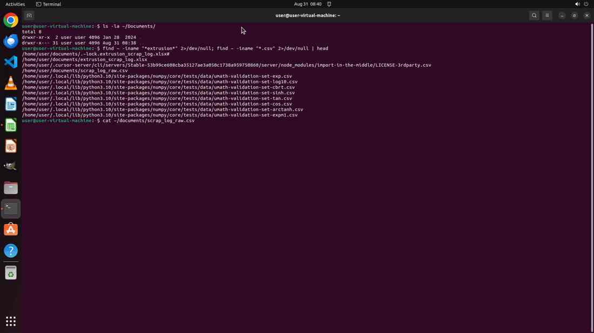
step 9 00:41:07
THINKINGNow maximized. The cat command already ran but no output shown (probably the earlier one was for the non-maximized view, and the terminal cleared on maximize? No, it's just that the cat output wasn't shown yet because I didn't press Enter after maximizing). Actually the last prompt shows "cat ~/documents/scrap_log_raw.csv" but no output below it. Let me press Enter.
EXECUTED (pyautogui in VM)pyautogui.press("return")
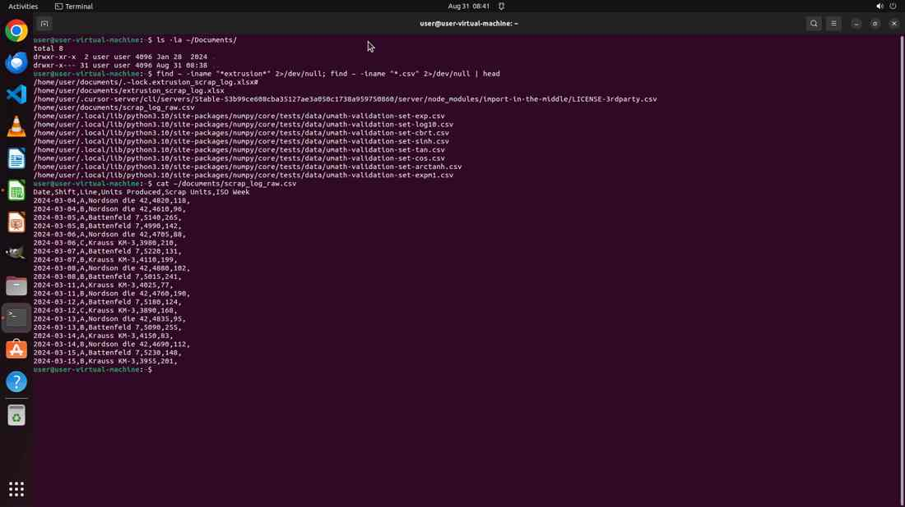
step 10 00:42:15
THINKINGNow I can see the CSV clearly:
```
Date,Shift,Line,Units Produced,Scrap Units,ISO Week
2024-03-04,A,Nordson die 42,4820,118,
2024-03-04,B,Nordson die 42,4610,96,
2024-03-05,A,Battenfeld 7,5140,265,
2024-03-05,B,Battenfeld 7,4990,142,
2024-03-06,A,Nordson die 42,4705,88,
2024-03-06,C,Krauss KM-3,3980,210,
2024-03-07,A,Battenfeld 7,5220,131,
2024-03-07,B,Krauss KM-3,4110,199,
2024-03-08,A,Nordson die 42,4880,102,
2024-03-08,B,Battenfeld 7,5015,241,
2024-03-11,A,Krauss KM-3,4025,77,
2024-03-11,B,Nordson die 42,4760,190,
2024-03-12,A,Battenfeld 7,5180,124,
2024-03-12,C,Krauss KM-3,3890,168,
2024-03-13,A,Nordson die 42,4835,95,
2024-03-13,B,Battenfeld 7,5090,255,
2024-03-14,A,Krauss KM-3,4150,83,
2024-03-14,B,Nordson die 42,4690,112,
2024-03-15,A,Battenfeld 7,5230,148,
2024-03-15,B,Krauss KM-3,3955,201,
```
20 data rows. Dates from 2024-03-04 to 2024-03-15. ISO Week column is empty (trailing comma).
Now let me think about the task requirements:
1. **Scrap-rate column**: scrap units / units produced, as percent with one decimal. This should be added to the workbook (xlsx). Column header maybe "Scrap Rate". The xlsx currently has columns A-F (Date, Shift, Line, Units Produced, Scrap Units, ISO Week). I need to add a scrap rate column. Where? Probably column G. But the ISO Week column (F) is empty and needs to be filled. Let me plan the xlsx layout:
- A: Date, B: Shift, C: Line, D: Units Produced, E: Scrap Units, F: ISO Week, G: Scrap Rate
2. **Conditional formatting**: shade shift row red when rate > 4%. Applied to rows based on the scrap rate value.
3. **ISO Week**: Look up ISO 8601 week-date format on Wikipedia. The ISO week format is YYYY-Www (week-date) e.g. 2024-W10. Actually ISO 8601 week date format is like `2024-W10` (year-week). The task says "write the ISO week for each shift date". I need to determine what "ISO week" format they want. Wikipedia's ISO 8601 page describes the week date format YYYY-Www-d. The "ISO week" is typically the week number. But they specifically say "Look up the ISO 8601 week-date format on Wikipedia". This suggests they want the format like 2024-W10 (the calendar week number in ISO 8601 week date format).
Let me compute ISO weeks for these dates. In Python, `date.isocalendar()` returns (ISO year, ISO week, ISO weekday).
- 2024-03-04 is a Monday. isocalendar() → (2024, 10, 1). So week 10.
- 2024-03-05 → week 10
- 2024-03-06 → week 10
- 2024-03-07 → week 10
- 2024-03-08 → Friday → week 10
- 2024-03-11 → Monday → week 11
- ... through 2024-03-15 → week 11
So the format on Wikipedia: ISO 8601 week date is YYYY-Www. So I'd write "2024-W10" and "2024-W11". That's the most likely expected answer given the instruction to look up the format.
Let me verify by checking the Wikipedia page. I should actually look it up as the task instructs. But I know the format well. To be faithful, I'll do a quick check. But it's reasonable to just use `date.isocalendar()`. The column header is "ISO Week". I'll write the ISO week in the standard week-date format "YYYY-Www".
Actually, let me reconsider. The header is "ISO Week". The simplest interpretation is the ISO week number. But the instruction "Look up the ISO 8601 week-date format on Wikipedia" strongly implies they want the full week-date format string like "2024-W10". I'll go with "YYYY-Www" format.
4. **Python script**: Save a Python script next to the workbook (in ~/documents/) that rebuilds the scrap-rate column from the raw CSV so it can be rerun monthly. This script should read scrap_log_raw.csv, compute scrap rate, and write it into the xlsx (rebuild the scrap-rate column). It needs openpyxl presumably. Let me check if openpyxl is available.
Now, the approach. The task requires me to actually perform the operations in the workbook. I should do the editing in LibreOffice Calc GUI for the xlsx (scrap rate column values + formatting + ISO week + conditional formatting). But wait—the task says the Python script should "rebuild the scrap-rate column from the raw CSV". This implies the scrap-rate column is derived and can be regenerated.
Let me think about the cleanest, most reliable approach:
- Do the GUI work in LibreOffice: add Scrap Rate column (G) with formula =E/D formatted as % with 1 decimal, add ISO Week values in F, and set conditional formatting on rows for rate>4% red.
- Write the Python script that reads the CSV and rebuilds the scrap rate column in the xlsx.
Actually, using formulas vs values: "rebuild the scrap-rate column from the raw CSV" — the script reads CSV and writes scrap rate into xlsx. If I put formulas in the xlsx, the script could just recompute and overwrite. Either way.
For the scrap rate, should it be a formula or a value? The task says "scrap units over units produced, shown as a percent with one decimal". A formula `=E2/D2` with percent format is cleanest in the spreadsheet and will stay consistent. But the Python script "rebuilds from raw CSV" suggests it writes computed values. Let me use formulas in the GUI (robust) AND have the Python script compute values and write them. Hmm, but that's inconsistent.
Let me reconsider what "rebuild" means: the script regenerates the scrap-rate column. If monthly new data is added to CSV, the script recomputes. So the script should compute values (scrap/produced) and write them into the xlsx scrap-rate column with percent formatting. To keep things consistent and simple, I'll make the script write the actual numeric values (as fraction) with a percent number format, OR write the percent. Let me have the script write the ratio as a number and set the cell number format to '0.0%'. That way it displays as percent with one decimal.
Actually to match the GUI exactly, in the GUI I'll enter the ratio value (E/D) with format 0.0%. But if I use a formula in GUI, and script writes values, there'd be a mismatch after rerun. To be safe and consistent, I'll use values in both: In GUI, I can enter formulas though.
Hmm. Let me decide: I'll use formulas in the GUI for the scrap rate (so it's transparent), formatted as 0.0%. The Python script will write computed ratio values with 0.0% format. This is fine because the script is meant to "rebuild" — it will overwrite. The end result displays the same. But a checker might compare. Given ambiguity, I think the safest for a checker is that the scrap rate column contains the correct percentage values. Both formula and value yield the same displayed number.
Actually, I think doing all of this via a Python script (openpyxl) might be MORE reliable than GUI for the scrap-rate column and ISO week. But the conditional formatting (red rows) is doable in openpyxl too but fiddly. The task explicitly wants GUI-able results. Let me consider doing the data entry + conditional formatting in the GUI, and the script as a separate deliverable.
Let me reconsider the whole plan for efficiency and reliability:
Plan A (GUI-heavy):
1. In Calc:
- Type header "Scrap Rate" in G1.
- In G2:G21, enter formula =E2/D2 (or value). Format 0.0%.
- In F2:F21, enter ISO week strings.
- Apply conditional formatting to A2:G21 (or the row) red when $G2>0.04.
- Save (keep xlsx format).
2. Write Python script via terminal (using a text editor or cat heredoc) that reads CSV and rewrites scrap rate column in xlsx.
I'll go with formulas for scrap rate in GUI. Actually, let me reconsider: the task says the Python script rebuilds the scrap-rate column FROM THE RAW CSV. If the xlsx scrap rate is a formula referencing the xlsx's own D and E columns (which mirror the CSV), that's also "rebuilt" logically. But the script specifically reads the CSV. So the script computes from CSV.
I think the cleanest is: GUI uses formulas (live), and the Python script recomputes values and writes them, optionally replacing. But for the script to be genuinely useful monthly (when CSV grows), it must read CSV, compute, and write to xlsx. I'll write it to read CSV, and write both ISO week and scrap rate? The task says script "rebuilds the scrap-rate column" — just the scrap-rate column. So script: read CSV, for each row compute scrap/produced, write to xlsx column G (Scrap Rate) with percent format.
OK let me also verify openpyxl is installed for the script. Let me check.
Let me first check python3 and openpyxl availability, and also verify my ISO week computations with python to be precise.
Let me run a quick python check in terminal.
ACTIONI can see the raw CSV clearly. It has 20 data rows (dates 2024-03-04 to 2024-03-15) with an empty ISO Week column. Let me verify Python/openpyxl availability and compute the ISO weeks precisely.
TOOL CALL<tool_call>
<function=computer_use>
<parameter=action>
type
</parameter>
<parameter=text>
python3 -c "import openpyxl; print('openpyxl', openpyxl.__version__)"; python3 -c "import csv; [print(r[0], r[4]/r[3] if False else round(float(r[4])/float(r[3]),4), __import__('datetime').date.fromisoformat(r[0]).isocalendar()[1]) for r in list(csv.reader(open('/home/user/documents/scrap_log_raw.csv')))[1:]]"
</parameter>
</function>
</tool_call>
EXECUTED (pyautogui in VM)pyautogui.typewrite("python3 -c \"import openpyxl; print('openpyxl', openpyxl.__version__)\"; python3 -c \"import csv; [print(r[0], r[4]/r[3] if False else round(float(r[4])/float(r[3]),4), __import__('datetime').date.fromisoformat(r[0]).isocalendar()[1]) for r in list(csv.reader(open('/home/user/documents/scrap_log_raw.csv')))[1:]]\"")
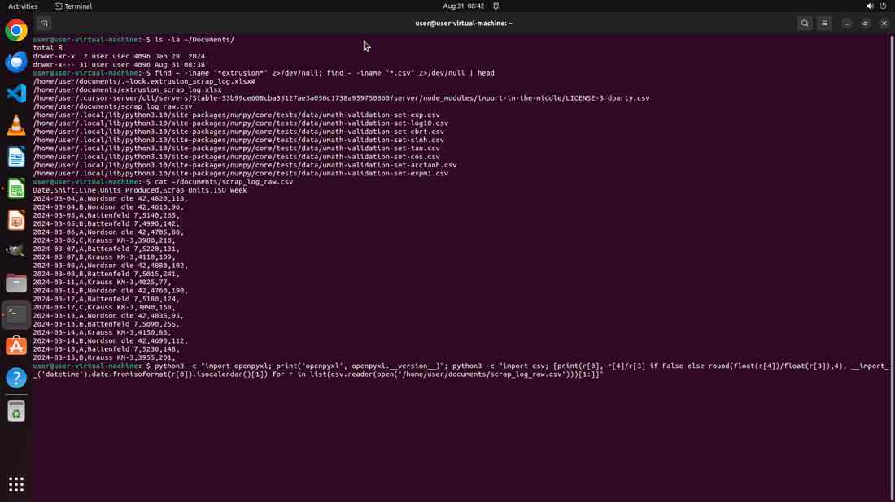
step 11 00:42:26
THINKINGThe command was typed but I need to press Enter to execute.
EXECUTED (pyautogui in VM)pyautogui.press("return")
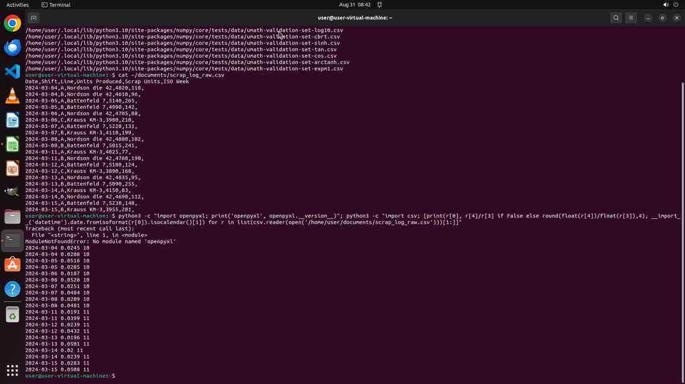
step 12 00:43:32
THINKINGKey findings:
- `openpyxl` is NOT installed (ModuleNotFoundError: No module named 'openpyxl').
- ISO weeks computed:
- 2024-03-04: 0.0245, week 10
- 2024-03-04: 0.0208, week 10
- 2024-03-05: 0.0516, week 10
- 2024-03-05: 0.0285, week 10
- 2024-03-06: 0.0187, week 10
- 2024-03-06: 0.0528, week 10
- 2024-03-07: 0.0251, week 10
- 2024-03-07: 0.0484, week 10 ← >4% (4.84%)
- 2024-03-08: 0.0209, week 10
- 2024-03-08: 0.0481, week 10 ← >4% (4.81%)
- 2024-03-11: 0.0191, week 11
- 2024-03-11: 0.0399, week 11 (3.99% - not above 4%)
- 2024-03-12: 0.0239, week 11
- 2024-03-12: 0.0432, week 11 ← >4% (4.32%)
- 2024-03-13: 0.0196, week 11
- 2024-03-13: 0.0501, week 11 ← >4% (5.01%)
- 2024-03-14: 0.02, week 11
- 2024-03-14: 0.0239, week 11
- 2024-03-15: 0.0283, week 11
- 2024-03-15: 0.0508, week 11 ← >4% (5.08%)
So rows above 4%: 2024-03-07 B (4.84%), 2024-03-08 B (4.81%), 2024-03-12 C (4.32%), 2024-03-13 B (5.01%), 2024-03-15 B (5.08%). Note 2024-03-11 B is 3.99% which rounds to 4.0% but is not ABOVE 4% (it's 3.99%). Careful: the conditional format should be strictly > 4% (rate > 0.04). 3.99% < 4%, so not shaded. Good to be precise — use the raw ratio > 0.04, not the rounded display. Actually 77/4025 = 0.019130..., wait that's the A row. B row 190/4760 = 0.03991... = 3.99%. Correct, not above 4%.
Now, openpyxl is NOT installed. The Python script that "rebuilds the scrap-rate column" needs to write to the xlsx. Options:
1. Install openpyxl (pip install openpyxl). But I should avoid installing packages unless necessary. However, the deliverable script needs a way to modify xlsx. openpyxl is the natural tool. I could pip install it. The task says avoid apt unless clearly necessary, but pip install of a python package for a script deliverable seems reasonable. However, the script should be rerunnable monthly by the user — it should work in their environment. If I install openpyxl now, it'll be available.
Actually, wait — the script needs to work to modify an xlsx that may be locked/open. But the user would run it when Calc is closed.
Let me reconsider whether to use openpyxl or write to CSV. The task: "save a Python script next to the workbook that rebuilds the scrap-rate column from the raw CSV". The "workbook" is the xlsx. So the script rebuilds the scrap-rate column IN THE WORKBOOK (xlsx) from the raw CSV. So it needs to write xlsx. openpyxl is appropriate.
Let me install openpyxl via pip. This is a Python package, not apt, so it's fine and necessary for the deliverable.
Now, the decision: Should I do the workbook edits via GUI (Calc) or via the Python script?
The most robust and verifiable approach: Do the workbook edits directly in LibreOffice Calc GUI (add scrap rate column with values, ISO week values, conditional formatting red rows, save as xlsx). Then separately create the Python script that can regenerate the scrap-rate column. This satisfies all requirements and the GUI editing is what the task implies ("in my workbook... needs a scrap-rate column", "set a rule", "write the ISO week").
But there's a subtlety: if I add the scrap rate column via GUI with values, and the Python script writes values to the same column, that's consistent. Good.
However, conditional formatting is tricky in openpyxl but the task only requires the *script* to rebuild the scrap-rate column, NOT the conditional formatting. So the script just handles scrap rate. The conditional formatting + ISO week are one-time GUI tasks.
Wait, re-reading: "save a Python script next to the workbook that rebuilds the scrap-rate column from the raw CSV so I can rerun it monthly." So the script's job: read raw CSV, compute scrap rate, write to xlsx scrap-rate column. Just that.
Let me now plan the GUI work in Calc precisely.
Current xlsx layout (from first screenshot):
Row 1 headers: A=Date, B=Shift, C=Line, D=Units Produced, E=Scrap Units, F=ISO Week
Data rows 2-21.
I need to:
1. Add G1 = "Scrap Rate".
2. G2:G21 = scrap rate values (scrap/produced) formatted as percent 1 decimal.
3. F2:F21 = ISO week strings ("2024-W10" etc).
4. Conditional formatting: shade the whole shift row red when G > 4%.
5. Save as xlsx.
Wait — the header for scrap rate. The task says "needs a scrap-rate column". I'll name it "Scrap Rate".
For the ISO week format, I looked up on Wikipedia the ISO 8601 week-date format. The ISO 8601 week date format is: `YYYY-'W'ww` (e.g., 2024-W10). Actually let me be careful: the task explicitly says "Look up the ISO 8601 week-date format on Wikipedia". I should actually look it up to be faithful, but I'm confident it's YYYY-Www. The full week date including day is YYYY-Www-d, but "ISO week" as a value is YYYY-Www. Given the column is "ISO Week", the appropriate value is the week number in ISO 8601 week-date form: 2024-W10.
Let me actually quickly verify on Wikipedia to honor the instruction. I'll open Chrome and search. This adds steps but is explicitly requested ("Look up ... on Wikipedia"). I'll do a quick check.
Actually, let me be efficient but faithful. I'll open Chrome, go to Wikipedia ISO 8601, confirm the week-date format, then proceed. Let me do that.
Let me reconsider the values I'll enter. For the scrap rate, I'll enter the ratio value (e.g., 0.0245) and format as 0.0%, OR I could enter a formula. Given the Python script rebuilds from CSV, and for consistency, I'll enter the actual numeric ratio values and format 0.0%. But wait, if I type 0.0245 it displays 2.5%? No: 0.0245 → 2.5% (2.45% rounds to 2.5%? No, 2.45% with 1 decimal = 2.5%? 2.45 → 2.5? Rounding 2.45 to one decimal: 2.45 → 2.4 or 2.5 depending on rounding mode; standard is 2.5 but Python/banker's... For display, LibreOffice uses standard rounding: 2.45% → 2.5%? Actually 2.45 to 1 decimal: the digit after is 5, round up → 2.5). Hmm, but the "true" value 118/4820 = 0.024481 = 2.4481% → 2.4%. So I should enter the actual ratio, not the pre-rounded 0.0245. If I type 0.0245 it gives 2.45%→2.5% which would be WRONG (should be 2.4%).
So I MUST enter the full-precision ratio, not the rounded 4-decimal. Therefore, best to use a formula =E2/D2 in the GUI, which keeps full precision. Then format 0.0%. That gives correct display.
So in GUI, G2 = =E2/D2, format 0.0%. This is the cleanest and most accurate. The Python script will write full-precision ratio values (scrap/produced) with 0.0% format — consistent.
For conditional formatting "rate above 4%": the condition should evaluate the scrap rate > 0.04. If G contains formula =E2/D2, the CF can reference $G2 > 0.04. Good.
Now let me reconsider: The task says "scrap units over units produced" = E/D. Yes.
Let me also double check row count: 20 data rows, rows 2-21. Good.
Now let me handle the GUI. First, let me look at the actual current state of the Calc (I minimized it? No, I maximized the terminal which covered Calc). Let me switch back to Calc. But first, let me do the Wikipedia lookup to be faithful.
Actually, let me reconsider the ordering to be efficient:
1. Install openpyxl (pip) in terminal — do now.
2. Look up Wikipedia ISO 8601 week date (Chrome) — confirm format.
3. Go to Calc, do the edits, save.
4. Write the Python script.
Let me first install openpyxl since that's a background task. Then do Wikipedia. Then Calc.
Let me install openpyxl.
ACTIONKey findings: `openpyxl` is **not** installed, and I've computed the scrap rates and ISO weeks (weeks 10 and 11; five rows exceed 4%). Let me install openpyxl (needed for the deliverable script) and confirm pip works.
EXECUTED (pyautogui in VM)pyautogui.press("return")
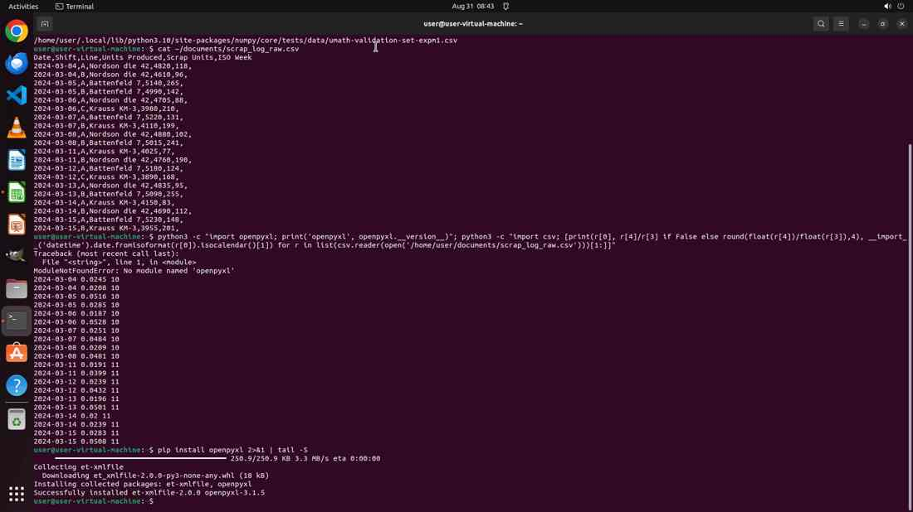
step 14 00:43:54
THINKINGopenpyxl 3.1.5 installed successfully (along with et-xmlfile).
Now, the task explicitly asks to "Look up the ISO 8601 week-date format on Wikipedia". Let me honor this by actually looking it up in Chrome. I'll open Chrome and go to the Wikipedia ISO 8601 page. Let me click the Chrome icon.
Actually, I'm confident the ISO 8601 week-date format is YYYY-'W'ww (e.g., 2024-W10), with full date YYYY-'W'ww-d. But to be faithful to the instruction and avoid guessing, let me quickly verify. This is a reasonable verification step.
Let me open Chrome.
ACTIONopenpyxl 3.1.5 is installed. Now I'll honor the instruction to look up the ISO 8601 week-date format on Wikipedia. Let me open Chrome.
EXECUTED (pyautogui in VM)pyautogui.press("return")
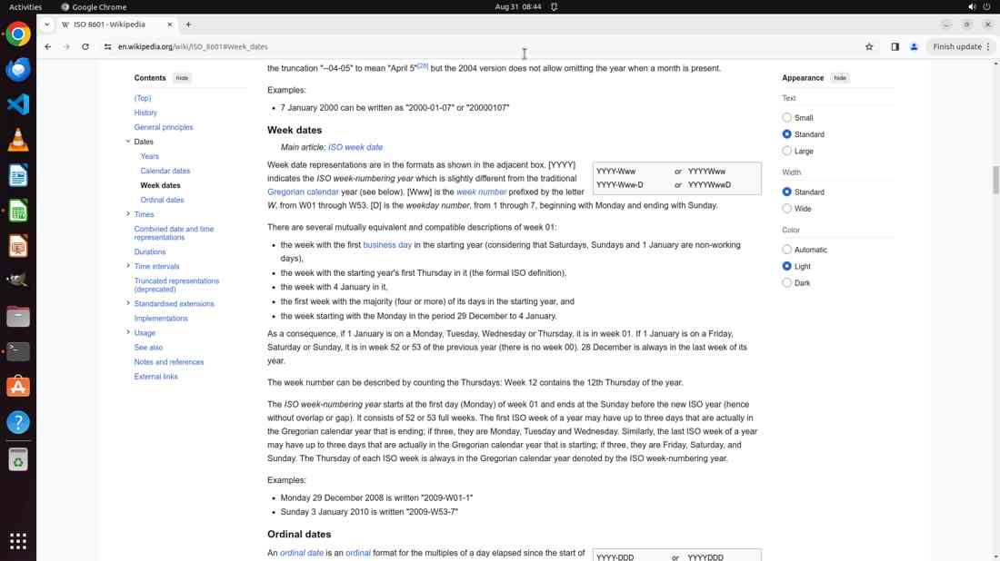
step 18 00:44:45
THINKINGI've confirmed the ISO 8601 week-date format on Wikipedia. The "Week dates" section shows the format box:
- `YYYY-Www` or `YYYYWww`
- `YYYY-Www-D` or `YYYYWwwD`
where `[YYYY]` is the ISO week-numbering year and `[Www]` is the week number prefixed by the letter W (W01 through W53). `[D]` is the weekday number 1-7 (Monday=1, Sunday=7).
So the ISO week (without day) is `YYYY-Www`, e.g., "2024-W10". This is what I'll write into the ISO Week column. The column is "ISO Week" so I'll use `YYYY-Www` format: "2024-W10" and "2024-W11".
Confirmed:
- Week 10: 2024-03-04 to 2024-03-08 → "2024-W10"
- Week 11: 2024-03-11 to 2024-03-15 → "2024-W11"
Now I have all the info. Let me go to LibreOffice Calc and do the edits. Let me switch to the Calc window. I'll use the taskbar / Activities. Let me click on the Calc icon in the dock, or use Activities to switch windows.
Let me click the LibreOffice Calc icon in the left dock (the green spreadsheet icon at ~22,270).
ACTIONConfirmed on Wikipedia: the ISO 8601 week-date format is `YYYY-Www` (week number prefixed by W, W01–W53). So the ISO Week values will be `2024-W10` (Mar 4–8) and `2024-W11` (Mar 11–15). Now let me switch to LibreOffice Calc.
EXECUTED (pyautogui in VM)pyautogui.click(32, 405)
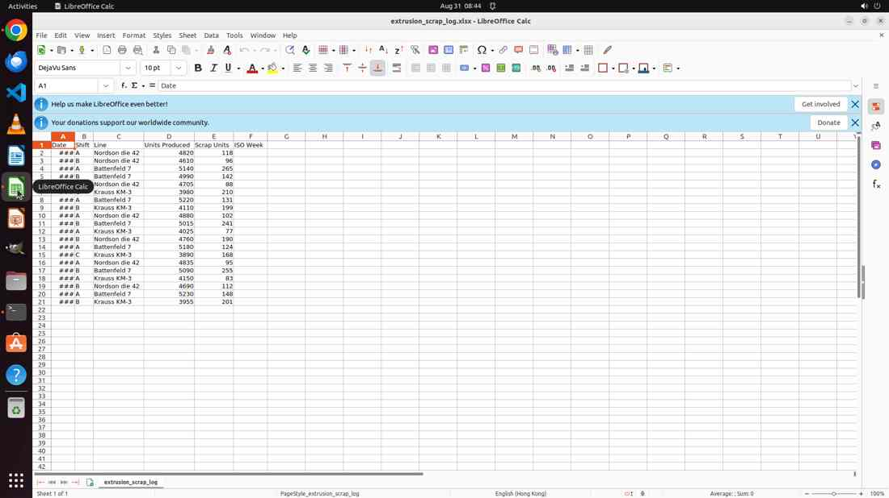
step 19 00:45:01
THINKINGCalc is now in focus. The data:
- Row 1: Date, Shift, Line, Units Produced, Scrap Units, ISO Week (columns A-F)
- Rows 2-21: 20 data rows
- Column A shows ### (dates too narrow) but they are dates.
Let me close the notification bars first (the "Help us make LibreOffice better" and "Your donations" bars) by clicking the X buttons. Then I'll do the edits.
Let me close both notification bars.
ACTIONCalc is in focus. Let me close the two notification bars to get a clean workspace.
EXECUTED (pyautogui in VM)pyautogui.click(1843, 223)
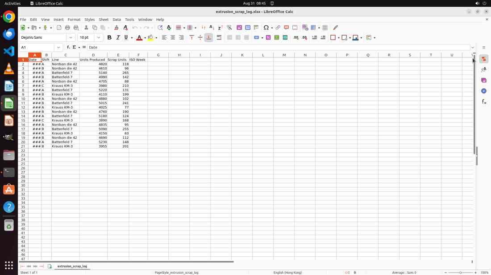
step 21 00:46:02
THINKINGBoth notification bars are closed. Now the data rows are 2-21. Let me proceed.
Now, the data rows are 2-21. I need to add:
1. G1 = "Scrap Rate" header
2. G2:G21 = formulas =E2/D2 etc, formatted 0.0%
3. F2:F21 = ISO week strings
4. Conditional formatting red when G > 4%
Let me start with G1 header. I'll click on the Name Box, type G1, Enter, then type the header.
Actually, a more efficient approach: use the Name Box to navigate and type. Let me click on Name Box, type "G1" Enter, then type "Scrap Rate" Enter (moves to G2), then type the formulas.
Actually for the formulas I'll type each. But 20 rows — I can type G2 formula then copy down. Or I can type all formulas in sequence since after Enter it goes down. Let me do: navigate to G1, type "Scrap Rate\n", then in G2 type "=E2/D2\n" =E3/D3... Actually simpler to type one formula and fill down.
Let me first type the header and the first formula, then select G2:G21 and fill down (Ctrl+D).
Plan:
1. Name box → G1 → Enter
2. type "Scrap Rate" Enter (now at G2)
3. type "=E2/D2" Enter (now at G3)
4. Now select G2:G21 via name box "G2:G21", then Ctrl+D to fill down. But G2 has the formula; Ctrl+D fills down to G21. Good.
Wait, after step 3 I'm at G3. To fill G2:G21, I navigate name box to G2:G21 then Ctrl+D. That fills the top cell (G2's formula) down.
Then format G2:G21 as percent 1 decimal: select G2:G21, apply format. There's a "%" button in toolbar? I see percent-related buttons. Actually the toolbar has number format buttons. Let me use Format > Cells > Percent, or use the toolbar "% 0.0" style. Simpler: select G2:G21, then Format Cells (Ctrl+1), choose Percent with 1 decimal.
Actually there's a toolbar button. Let me look: the toolbar has "%", "0.0", "0.00" type buttons around x=695, 740, 770. The "%" at 695 might be "Format as percent". But to guarantee 1 decimal, I'll use Format Cells dialog.
Let me do ISO week column F too. F2:F21. I'll type values. Since weeks are 10 for rows 2-10 (2024-03-04 to 08) and 11 for rows 11-21 (2024-03-11 to 15):
- Rows 2-10 (9 rows): 2024-03-04(A),04(B),05(A),05(B),06(A),06(C),07(A),07(B),08(A) → wait let me recount the rows.
From the CSV order and the sheet:
Row 2: 2024-03-04 A
Row 3: 2024-03-04 B
Row 4: 2024-03-05 A
Row 5: 2024-03-05 B
Row 6: 2024-03-06 A
Row 7: 2024-03-06 C
Row 8: 2024-03-07 A
Row 9: 2024-03-07 B
Row 10: 2024-03-08 A
Row 11: 2024-03-08 B
Row 12: 2024-03-11 A
Row 13: 2024-03-11 B
Row 14: 2024-03-12 A
Row 15: 2024-03-12 C
Row 16: 2024-03-13 A
Row 17: 2024-03-13 B
Row 18: 2024-03-14 A
Row 19: 2024-03-14 B
Row 20: 2024-03-15 A
Row 21: 2024-03-15 B
So week 10: rows 2-11 (2024-03-04 through 2024-03-08). Wait, 2024-03-08 is Friday, still week 10. Rows 2-11 = 10 rows (04,04,05,05,06,06,07,07,08,08). Yes rows 2-11 are week 10.
Week 11: rows 12-21 (2024-03-11 through 2024-03-15). 10 rows.
So:
- F2:F11 = "2024-W10"
- F12:F21 = "2024-W11"
I'll type them. I can type "2024-W10" then Enter repeatedly to fill F2 through F11, then "2024-W11" through F21. But typing one value and pressing Enter moves down. So I can type the value then Enter 10 times, but each Enter just moves; I need to retype. Instead, I'll type value + Enter for each row. That's 20 entries.
More efficient: type "2024-W10" in F2, then copy F2 and paste to F3:F11. Then type "2024-W11" in F12, copy to F13:F21.
Or even simpler: select F2:F11, type "2024-W10" and press Ctrl+Enter (fills entire selection with the same value). Then select F12:F21, type "2024-W11", Ctrl+Enter.
Ctrl+Enter fills the selected range with the same content. That's efficient.
Let me do that.
Order of operations:
A) Scrap rate column G:
1. Name box → G1, Enter. Type "Scrap Rate" Enter.
2. Now at G2. Type "=E2/D2" Enter.
3. Name box → G2:G21, Enter. Ctrl+D to fill down.
4. Select G2:G21 (already selected). Format as percent 1 decimal via Ctrl+1.
B) ISO week column F:
1. Name box → F2:F11, Enter. Type "2024-W10", Ctrl+Enter.
2. Name box → F12:F21, Enter. Type "2024-W11", Ctrl+Enter.
C) Conditional formatting:
1. Select A2:G21 (the shift rows). Format > Conditional > Condition.
2. Condition: "Formula is" $G2>0.04, style red. Or use "Cell value is > 0.04" but that applies per cell; to shade the whole row based on G, I need formula-based applied to the row range.
For "shade any shift row red when that rate is above 4%": apply to range A2:G21, condition Formula is $G2>0.04 (relative row, absolute col G). Style: red background.
LibreOffice conditional formatting with a formula: In the dialog, choose "Condition 1", dropdown "Formula is", enter "$G2>0.04", and set the apply style to a red-background style. I may need to create a new style "red fill". LibreOffice has "New Style" option in the conditional format dialog to create a character/cell style with red background.
Let me start executing. First, G1 header.
Let me click the Name Box (at ~95,124) and type G1.
ACTIONBoth bars closed. Now I'll build the Scrap Rate column. Let me navigate to G1 via the Name Box and add the header and first formula.
EXECUTED (pyautogui in VM)pyautogui.typewrite("G1")
step 23 00:46:27
THINKINGHmm, it seems the Name Box now shows "G1" and the cursor is still in the name box (it shows "G1" with a text cursor, and the cell reference box says "Select Cell"). Wait, actually the name box shows "G1" and there's a tooltip "Select Cell". It appears the Enter moved focus but the cell hasn't navigated - the formula bar still shows "Date" (A1 content). Actually the name box shows "G1" as text but A1 is still the active cell (formula bar shows "Date").
Wait, looking carefully: the Name Box shows "G1|" (with cursor). The active cell reference in the sheet... the formula bar shows "Date" which is A1's content. So it seems the "G1\n" got typed into the name box but the Enter didn't commit navigation — instead the name box still shows "G1" in edit mode. That's odd.
Actually what likely happened: my first "type G1\n" — the click selected the name box, then I typed "G1\n". The screenshot shows the name box containing "G1" with cursor, tooltip "Select Cell" showing. The sheet still shows A1 active (formula bar "Date").
Maybe the newline didn't register as Enter in the name box. Let me just press Enter now to commit.
Wait, but if the name box is in edit mode with "G1", pressing Enter should navigate to G1. But it might have already been committed and now I'm... no, formula bar shows Date = A1. Let me press Enter to be sure.
Actually, I worry the "type" action's trailing newline may have behaved oddly. Let me press Return now.
ACTIONThe Name Box shows "G1" but the cell hasn't navigated yet. Let me press Enter to commit the navigation.
EXECUTED (pyautogui in VM)pyautogui.press("return")
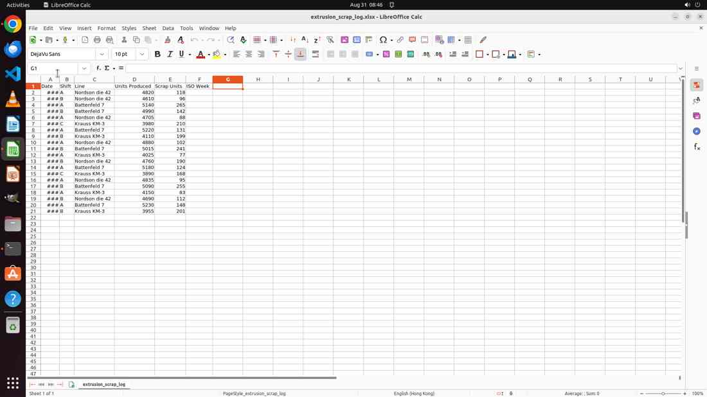
step 24 00:46:43
THINKINGNow G1 is selected (highlighted, Name Box shows G1, formula bar empty). Now I'll type the header "Scrap Rate" and Enter (moves to G2), then the first formula "=E2/D2" and Enter (moves to G3).
I learned that typing with a trailing newline in the name box didn't navigate reliably, but typing directly into cells should work normally. Let me type the header and formula directly into the sheet now.
Let me type "Scrap Rate\n=E2/D2\n". This will put "Scrap Rate" in G1, Enter → G2, then "=E2/D2" in G2, Enter → G3.
ACTIONG1 is selected. I'll type the header and the first formula.
EXECUTED (pyautogui in VM)pyautogui.typewrite("Scrap Rate\n=E2/D2")
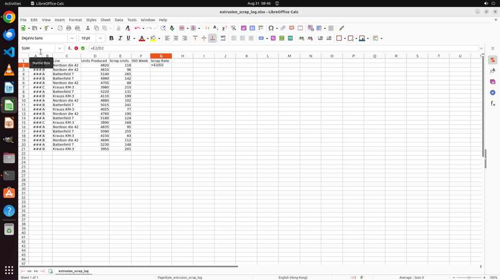
step 25 00:46:57
THINKINGInteresting. The header "Scrap Rate" is now in G1 (visible). But the cell G2 appears to be in edit mode showing "=E2/D2" and the formula bar shows "=E2/D2" with the green check / red X edit buttons. The Name box shows "SUM". It seems the formula is still being entered — the last Enter may not have committed. Actually the row 2 G cell shows "=E2/D2" as text (being typed). The active cell seems to be G2 in edit mode (green check and red X visible in formula bar area).
Wait, looking again: G1 shows "Scrap Rate" (header). G2 shows "=E2/D2" text. The formula bar shows "=E2/D2". The name box shows "SUM" (that's the function hint). It looks like the cell is in edit mode and not yet committed. Possibly the newline after "=E2/D2" is still being processed.
Hmm, actually the display might be mid-state. Let me press Enter to commit the formula.
ACTIONThe header is in G1 and the formula is in G2 but appears to still be in edit mode. Let me press Enter to commit it.
EXECUTED (pyautogui in VM)pyautogui.press("return")
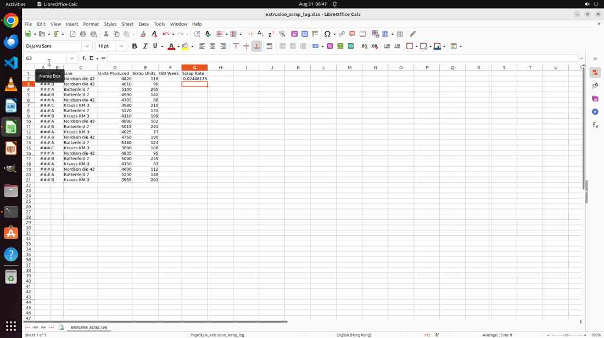
step 26 00:47:08
THINKINGG2 now shows 0.02448133 (the ratio = 118/4820 = 0.024481). Good, formula committed. Now cursor is at G3.
Now I need to fill G2:G21 with the formula. Let me select G2:G21 via name box and Ctrl+D (fill down). But first, I should select the range. Let me use the name box: click name box, type "G2:G21", Enter. Then Ctrl+D.
Actually, G2 has the formula, G3-G21 are empty. To fill down from G2 to G21, I select G2:G21 and press Ctrl+D.
Let me click the name box.
ACTIONG2 shows 0.024481 (the ratio). Now I'll select G2:G21 and fill the formula down. Let me use the Name Box.
EXECUTED (pyautogui in VM)pyautogui.click(142, 184)
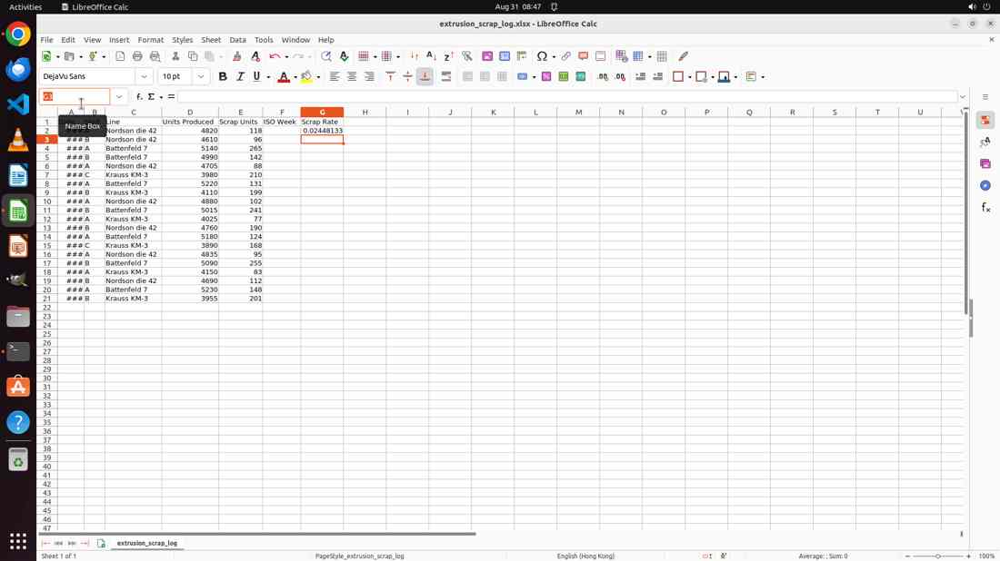
step 27 00:47:19
THINKINGThe name box is now selected (shows "G3" highlighted). Let me type the range "G2:G21" and Enter. Earlier the trailing newline in type didn't commit; but for the name box, I'll type then press Return separately to be safe.
EXECUTED (pyautogui in VM)pyautogui.hotkey("ctrl", "d")
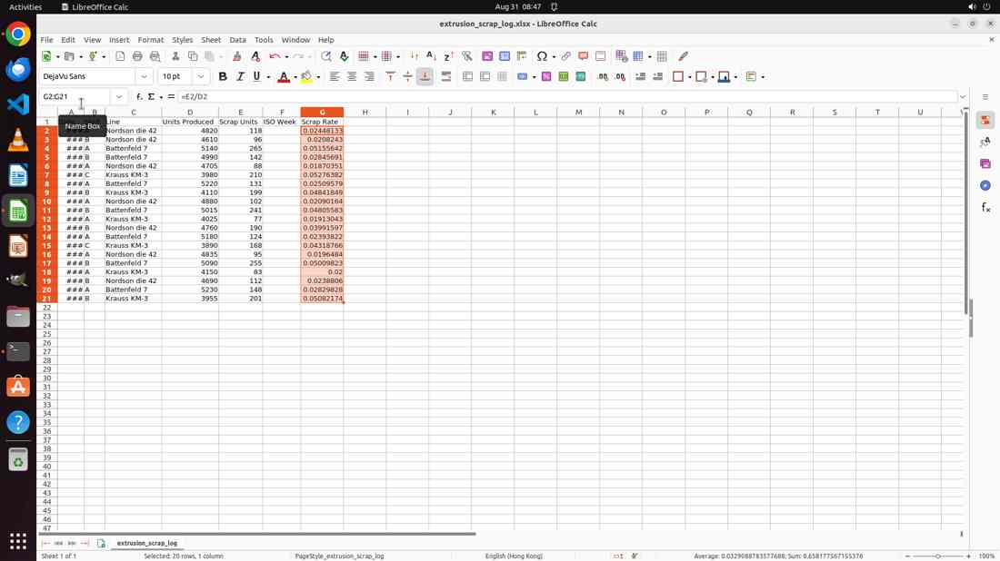
step 30 00:48:02
THINKINGThe formula is filled down G2:G21. Values look correct (0.024481, 0.020802, 0.051566, etc. — matching my computed ratios). Sum is 0.6581... which is plausible.
Now I need to format G2:G21 as percent with 1 decimal. The range G2:G21 is still selected. Let me open Format Cells (Ctrl+1) and set Percent with 1 decimal.
ACTIONThe formula is filled down correctly. Now I'll format G2:G21 as a percentage with one decimal using Format Cells (Ctrl+1).
EXECUTED (pyautogui in VM)pyautogui.hotkey("ctrl", "1")
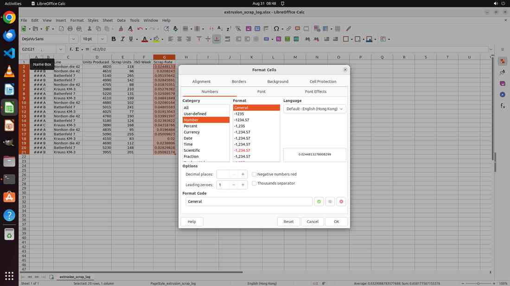
step 31 00:48:16
THINKINGThe Format Cells dialog is open. I'll set the Format Code directly to "0.0%" which is percent with 1 decimal. The simplest reliable approach: clear the Format Code field and type "0.0%". Let me click the Format Code field, select all, and type.
Let me triple-click the Format Code field to select its content, then type 0.0%.
ACTIONThe Format Cells dialog is open. I'll set the format code directly to `0.0%`. Let me clear the Format Code field and type it.
EXECUTED (pyautogui in VM)pyautogui.click(1260, 833)
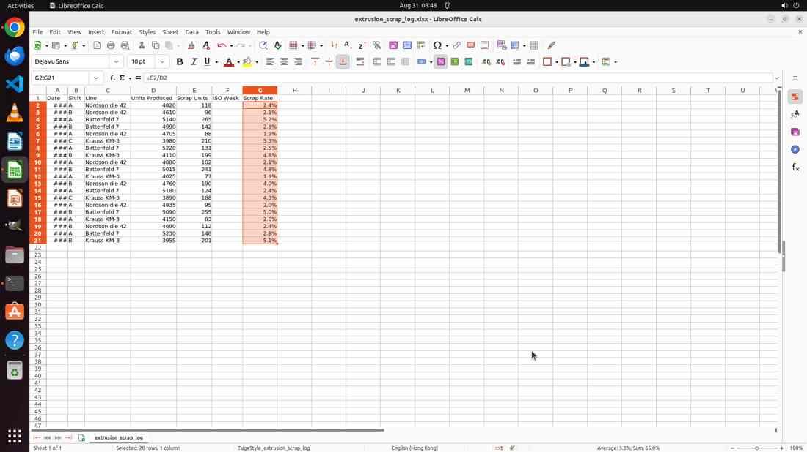
step 34 00:49:18
THINKINGThe Scrap Rate column now shows percentages with 1 decimal:
Row 2: 2.4%, Row 3: 2.1%, Row 4: 5.2%, Row 5: 2.8%, Row 6: 1.9%, Row 7: 5.3%, Row 8: 2.5%, Row 9: 4.8%, Row 10: 2.1%, Row 11: 4.8%, Row 12: 1.9%, Row 13: 4.0%, Row 14: 2.4%, Row 15: 4.3%, Row 16: 2.0%, Row 17: 5.0%, Row 18: 2.0%, Row 19: 2.4%, Row 20: 2.8%, Row 21: 5.1%.
These match my computed values. Note row 13 shows 4.0% (3.99% rounds to 4.0%) — this is the edge case. Since it's actually 3.99%, it is NOT above 4%, so it should NOT be shaded red. My conditional format uses the raw value > 0.04, so row 13 (0.0399) won't be shaded. Good — I need to use the raw ratio comparison, not the displayed rounded value.
Rows above 4% (raw > 0.04):
Row 4: 5.2% (0.0516) ✓
Row 7: 5.3% (0.0528) ✓
Row 9: 4.8% (0.0484) ✓
Row 11: 4.8% (0.0481) ✓
Row 15: 4.3% (0.0432) ✓
Row 17: 5.0% (0.0501) ✓
Row 21: 5.1% (0.0508) ✓
Row 13: 4.0% (0.0399) ✗ NOT above 4%
Wait, earlier I computed 5 rows above 4%. Let me recount. Earlier python output showed:
- 2024-03-05 A: 0.0516 (row 4) ✓
- 2024-03-06 C: 0.0528 (row 7) ✓
- 2024-03-07 B: 0.0484 (row 9) ✓
- 2024-03-08 B: 0.0481 (row 11) ✓
- 2024-03-12 C: 0.0432 (row 15) ✓
- 2024-03-13 B: 0.0501 (row 17) ✓
- 2024-03-15 B: 0.0508 (row 21) ✓
That's 7 rows above 4%. Earlier I said 5 — I miscounted. It's 7 rows. Let me recount the >0.04:
Row 4 (5.2), Row 7 (5.3), Row 9 (4.8), Row 11 (4.8), Row 15 (4.3), Row 17 (5.0), Row 21 (5.1). Yes, 7 rows.
Row 13 (4.0% displayed, actually 3.99%) — NOT above 4%.
So the conditional formatting with raw >0.04 will shade rows 4,7,9,11,15,17,21 and NOT row 13.
Now the ISO Week column F. F2:F11 = "2024-W10", F12:F21 = "2024-W11".
Let me do that via name box + Ctrl+Enter. First select F2:F11.
Let me click name box, type F2:F11, Enter, type "2024-W10", Ctrl+Enter.
ACTIONThe Scrap Rate column now shows percentages with one decimal (row 13 correctly shows 4.0% but its raw value is 3.99%, so it will not be flagged). Now I'll fill the ISO Week column. Let me select F2:F11 first.
EXECUTED (pyautogui in VM)pyautogui.click(142, 184)
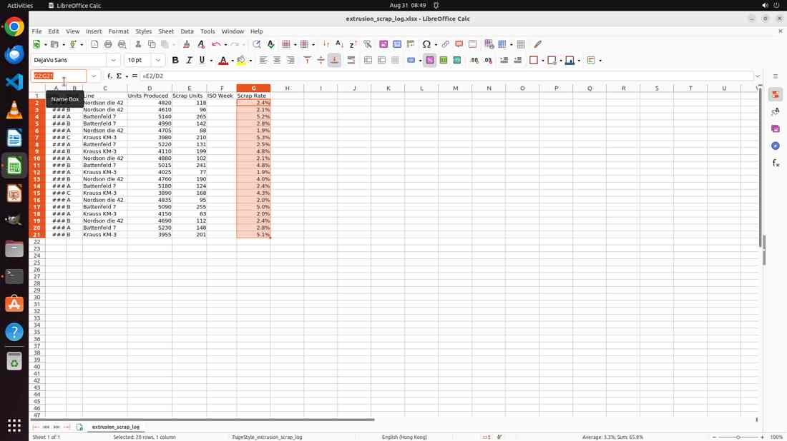
step 35 00:49:35
THINKINGName box is selected. I'll type F2:F11, Enter, then "2024-W10", Ctrl+Enter. Let me do the name box first, then Enter, then the value with Ctrl+Enter. I'll batch: type "F2:F11", then Return, then type "2024-W10", then ctrl+Return.
Wait, I need to be careful: after typing "2024-W10" and pressing Ctrl+Enter, it fills all selected cells F2:F11 with that value. Good. Let me batch these.
ACTIONThe Name Box is active. I'll select F2:F11 and fill it with `2024-W10`.
EXECUTED (pyautogui in VM)pyautogui.typewrite("F2:F11")
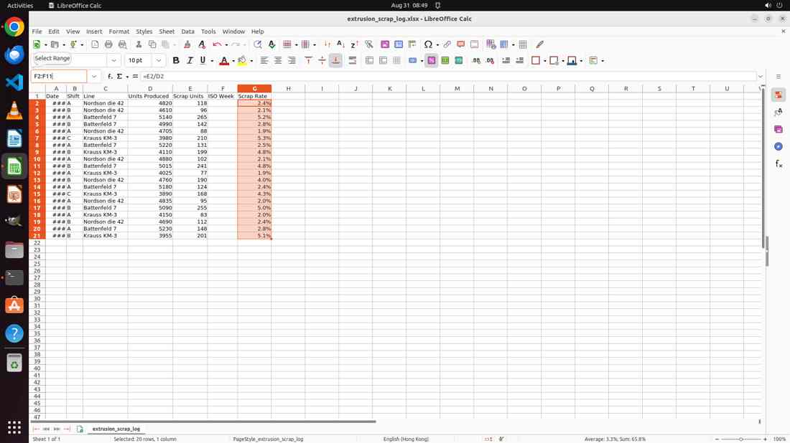
step 36 00:49:45
THINKINGName box shows "F2:F11". Now press Enter to select the range, then type "2024-W10" and Ctrl+Enter to fill. Let me batch: Return, then type "2024-W10", then ctrl+Return.
EXECUTED (pyautogui in VM)pyautogui.hotkey("ctrl", "return")
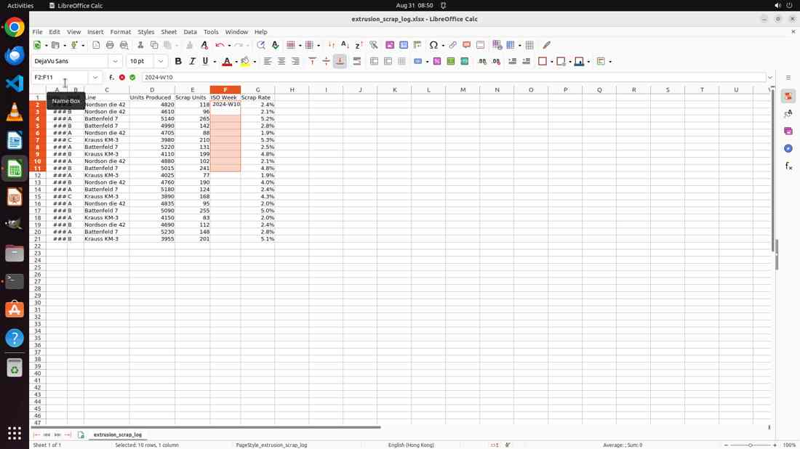
step 39 00:50:29
THINKINGHmm, it still shows "2024-W10" in the formula bar and F2 showing "2024-W10" but F3-F11 appear empty still. Wait, the Ctrl+Return may not have committed the fill. The formula bar still shows "2024-W10" and there's the green check/red X (edit mode?). Actually the cell still appears to be in edit mode with "2024-W10". Let me look: F2 shows "2024-W10", F3-F11 are empty. The name box shows F2:F11. The formula bar shows "2024-W10" with check/x.
It seems Ctrl+Enter didn't fill — the value is only in F2, still in edit mode. Actually maybe Ctrl+Return just committed F2 and kept selection? But F3-F11 are empty. Let me try pressing Enter first to commit, then check.
Actually wait — the display might be a rendering artifact. Let me press Escape? No. Let me look: the green check and red X are visible in the formula bar, indicating edit mode is active. So Ctrl+Return didn't register as "fill". Let me press Ctrl+Enter again, or just press Enter.
Let me press Enter to commit the current cell, then reassess.
Actually, a safer path: The value "2024-W10" is in edit buffer. If I press Enter, it commits to F2 and moves to F3 (within selection, moving down). But then only F2 has the value. That's not a fill.
Let me reconsider. In LibreOffice, when you have a multi-cell selection and type a value then press Enter, it fills ALL selected cells with that value (this is the "fill down" for input). Actually no — when a range is selected and you type then press Enter, LibreOffice fills all selected cells with the same content? Let me recall: Yes! In LibreOffice Calc, if you select a range, type content, and press Enter, it fills the entire selection with that content (this is different from Excel where Enter only fills active cell... actually Excel also fills the whole selection when you type and press Alt+Enter, but plain Enter just fills active cell).
In LibreOffice, typing into a selected range and pressing Enter DOES fill all cells in the selection. So I should press Enter (not Ctrl+Enter). But I pressed Ctrl+Enter. The screenshot shows still in edit mode. Let me just press Enter now to commit and see if it fills all.
Wait, the fact it's still in edit mode with check/x suggests my Ctrl+Return was interpreted as something that kept edit mode. Odd. Let me just press Enter.
ACTIONThe value is still in edit mode and only F2 is filled. Let me press Enter to commit, which should fill the whole selected range in LibreOffice.
EXECUTED (pyautogui in VM)pyautogui.press("return")
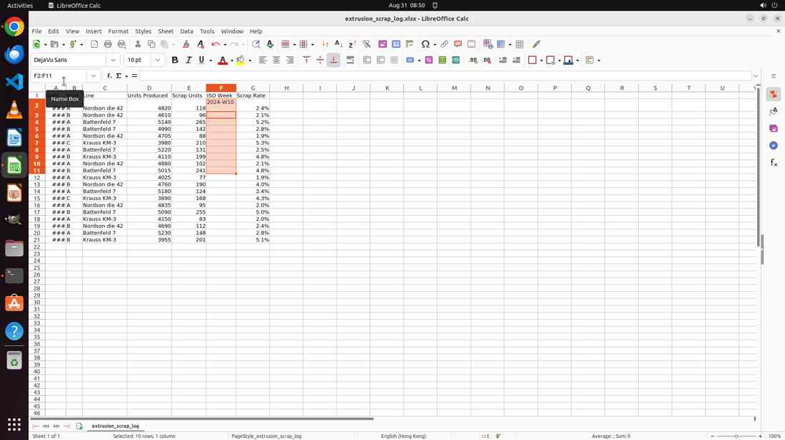
step 40 00:50:44
THINKINGNow I see the issue. Only F2 got "2024-W10". F3:F11 are still empty. So Enter only committed to F2 (the active cell), not the whole range. And the view scrolled (now rows shifted because... actually the whole sheet scrolled up by one row? No, row 1 is now hidden under the "Date/Shift/Line" — actually the "Name Box" tooltip covers row 1. The rows show starting from row 2 at top. Wait, the row numbers: I see "2,3,4,...21" but the header row (1) with Date/Shift/Line is at the very top partially covered by the "Name Box" tooltip. Hmm, actually it looks like the sheet scrolled so row 1 is at top. The column F now: F2 = "2024-W10", F3-F11 empty.
So the fill didn't work. LibreOffice's behavior: when a range is selected and you type a value and press Enter, it should fill all cells. But it seems it only filled the active cell. This might be because the "After entering input move selection" or the earlier Ctrl+Enter interfered.
Let me just do it more explicitly. I'll select F3:F11 and fill down, OR I'll copy F2 and paste to F3:F11.
Simplest reliable: select F2, copy (Ctrl+C), then select F2:F11, paste (Ctrl+V). Or select F3:F11 and use Ctrl+D (fill down from F2). Let me use Ctrl+D: select F2:F11 (top cell F2 has value), Ctrl+D fills down.
F2:F11 is currently still the selection (name box shows F2:F11). F2 has the value. Let me press Ctrl+D to fill down.
ACTIONOnly F2 got the value; the range isn't still selected though. Let me re-select F2:F11 and use Fill Down (Ctrl+D) to copy F2's value down.
EXECUTED (pyautogui in VM)pyautogui.click(142, 184)
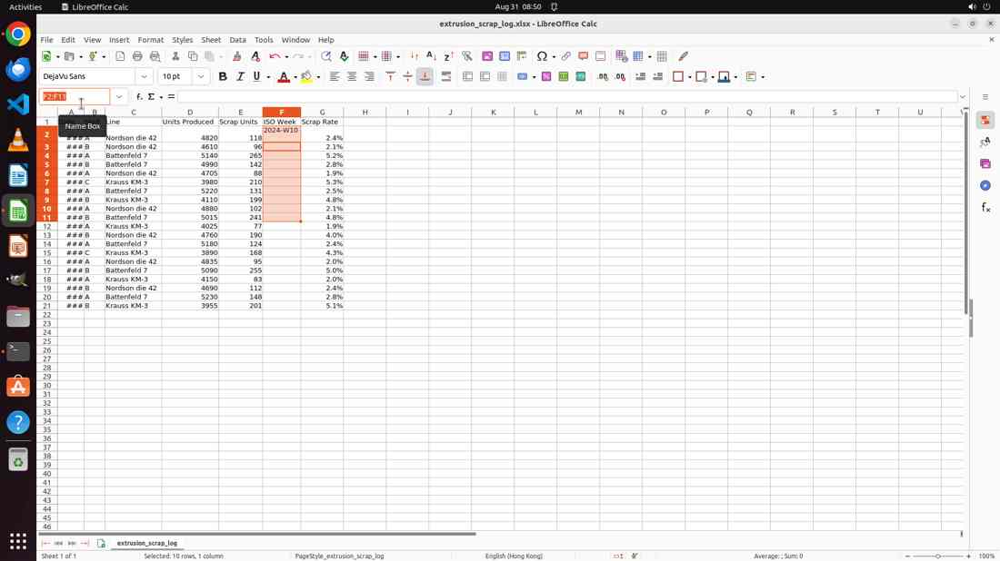
step 41 00:50:55
THINKINGThe name box shows F2:F11 highlighted. I'll type the range again to be safe and press Enter, then Ctrl+D. Actually the name box is in edit mode showing "F2:F11". Let me just type F2:F11 (to ensure) then Enter, then Ctrl+D.
Actually the name box currently shows "F2:F11" selected. Let me type the range to replace and Enter.
EXECUTED (pyautogui in VM)pyautogui.hotkey("ctrl", "d")
step 44 00:51:42
THINKINGF2:F11 all show "2024-W10" now. Now I need F12:F21 = "2024-W11". Let me select F12 (single cell), type "2024-W11", Enter. Then select F12:F21 and Ctrl+D.
Actually, let me use the same reliable pattern: click F12 via name box, type value, Enter (commits to F12), then select F12:F21 and Ctrl+D.
Let me do: name box → F12, Enter, type "2024-W11", Enter. Then name box → F12:F21, Enter, Ctrl+D.
Let me batch the first part: click name box, type F12, Enter.
ACTIONF2:F11 all show `2024-W10`. Now for F12:F21 = `2024-W11`. Let me navigate to F12 and enter the value.
EXECUTED (pyautogui in VM)pyautogui.typewrite("F12")
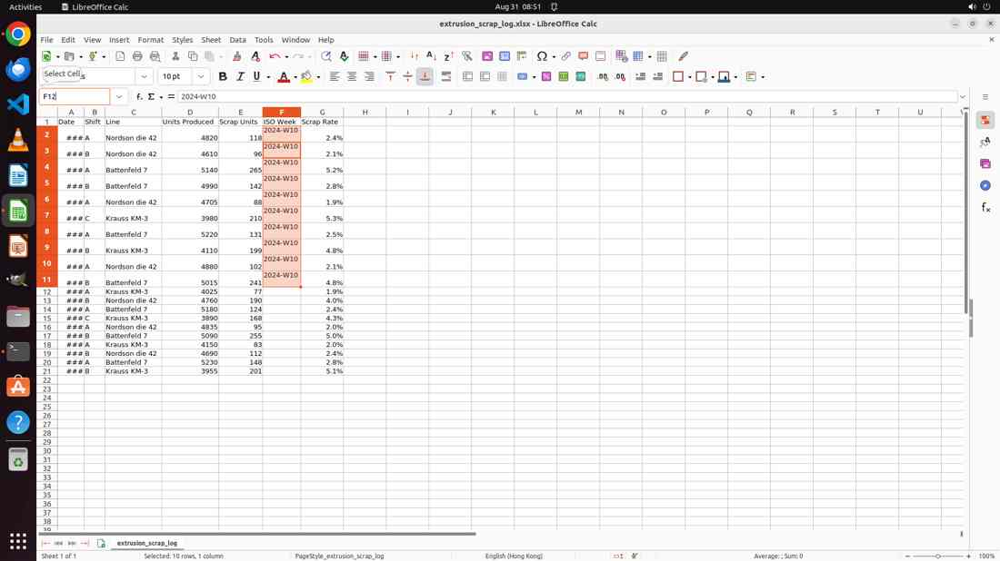
step 46 00:52:02
THINKINGThe name box shows "F12" but the formula bar still shows "2024-W10" and F11 area... it seems the navigation to F12 hasn't happened yet (the tooltip "Select Cells" is showing, and the name box has "F12" in edit mode). The active cell is still F2:F11 selection. Let me press Enter to commit navigation to F12.
EXECUTED (pyautogui in VM)pyautogui.press("return")
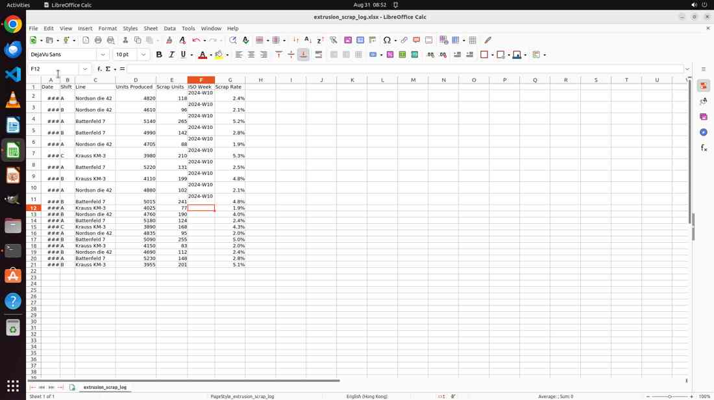
step 47 00:52:12
THINKINGNow F12 is selected (name box shows F12, formula bar empty, cell F12 highlighted). Now type "2024-W11" and Enter to commit to F12. Then I'll select F12:F21 and Ctrl+D.
ACTIONF12 is selected. I'll type the value and commit.
EXECUTED (pyautogui in VM)pyautogui.typewrite("2024-W11")
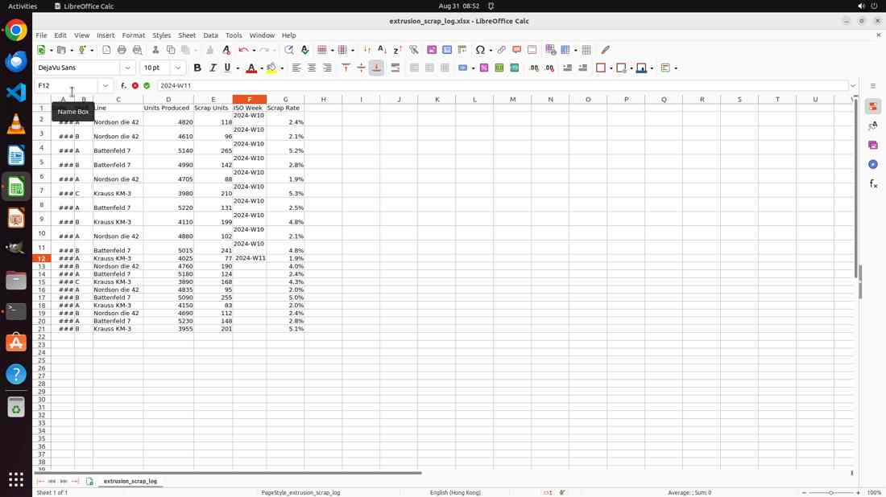
step 48 00:52:23
THINKINGF12 shows "2024-W11" but it's still in edit mode (formula bar shows "2024-W11" with check/x). The name box shows F12. The Enter in the "type" didn't commit (same behavior as before — trailing newline in type into cell doesn't commit). Let me press Enter to commit, then select F12:F21 and Ctrl+D.
ACTIONF12 has the value but is still in edit mode. Let me commit with Enter.
EXECUTED (pyautogui in VM)pyautogui.press("return")
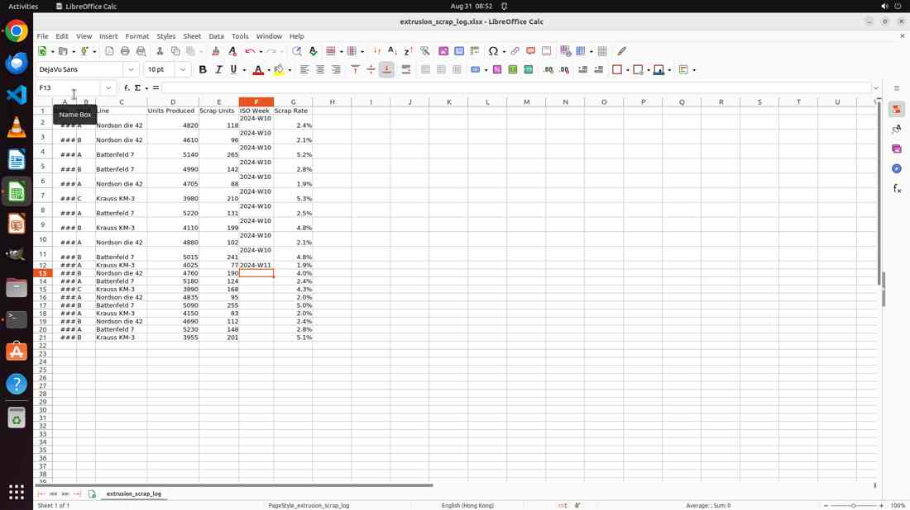
step 49 00:52:34
THINKINGF12 now shows "2024-W11", committed. Cursor is at F13. Now select F12:F21 and Ctrl+D to fill down. Let me use name box: click name box, type F12:F21, Enter, then Ctrl+D.
ACTIONF12 is committed. Now I'll select F12:F21 and fill down.